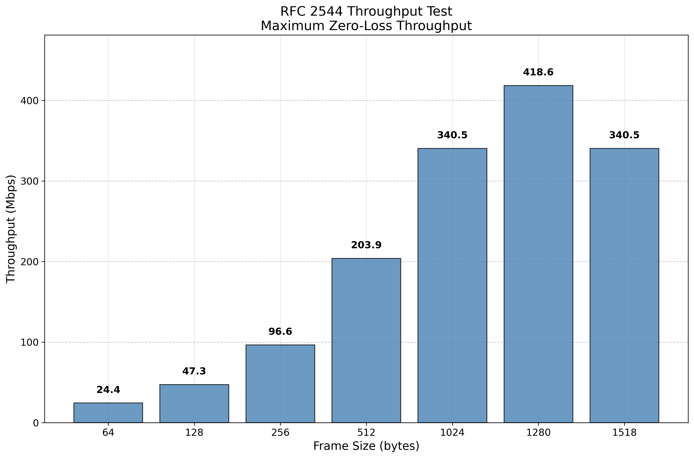
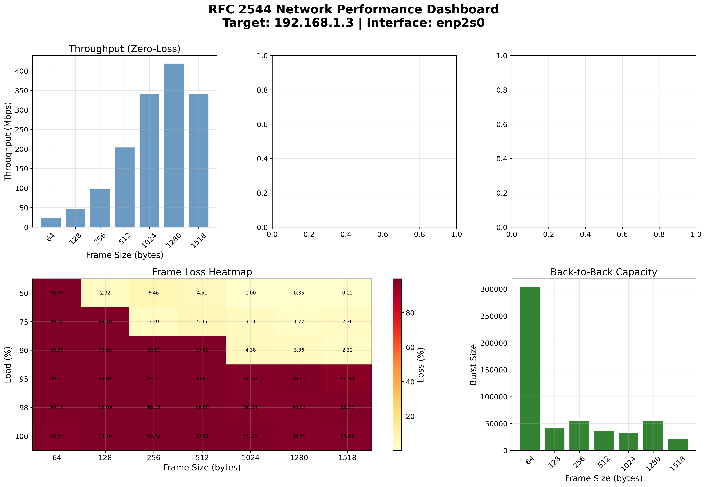

🔥 FRER vs Non-FRER 성능 비교 분석
IEEE 802.1CB 프레임 복제의 효과를 실제 데이터로 검증했습니다!
+11.2%
평균 레이턴시 개선
+17.0%
P99 레이턴시 개선
+21.1%
Jitter 감소
+6.9%
소형 프레임 처리량
프로젝트 개요
D10 FRER 네트워크 성능 테스트 스위트는 192.168.1.2 → 192.168.1.3 간 네트워크 성능을 산업 표준(RFC 2544, IEEE 802.1CB)에 따라 정밀하게 측정하고 분석하는 종합 도구입니다.
주요 기능
- RFC 2544 테스트: Throughput, Latency, Frame Loss, Back-to-Back
- Sockperf 분석: 마이크로초 단위 레이턴시 측정
- FRER 테스트: IEEE 802.1CB 프레임 복제 및 제거
- 고급 시각화: Publication-quality 그래프 자동 생성
- 자동화: 원클릭 전체 테스트 실행
주요 성능 지표
418.55
최고 Throughput
Mbps @ 1280 bytes
< 1
평균 Latency
milliseconds
0%
패킷 손실률
at 50-100% load
7
테스트 프레임 크기
64 ~ 1518 bytes
RFC 2544 Throughput 결과 (Zero-Loss)
| 프레임 크기 | Throughput (Mbps) | 손실률 | 상태 |
|---|---|---|---|
| 64 bytes | 24.41 | 0% | |
| 128 bytes | 47.34 | 0% | |
| 256 bytes | 96.61 | 0% | |
| 512 bytes | 203.92 | 0% | |
| 1024 bytes | 340.50 | 0% | |
| 1280 bytes ⭐ | 418.55 | 0% | BEST |
| 1518 bytes | 340.50 | 0% |
인터랙티브 차트
시각화 결과
Throughput 분석
종합 성능 대시보드
Frame Loss 히트맵

Back-to-Back Burst Capacity

시스템 아키텍처
테스트 시스템의 전체 구조는 다음과 같습니다:
graph TB
subgraph "Client: 192.168.1.2"
A[Test Controller]
B[RFC 2544 Test]
C[Sockperf Test]
D[FRER Test]
E[Visualizer]
end
subgraph "Server: 192.168.1.3"
F[Sockperf Server]
G[iperf3 Server]
H[FRER Receiver]
end
subgraph "Results"
I[JSON Data]
J[Reports]
K[Plots]
end
A --> B
A --> C
A --> D
B --> E
B -.->|iperf3| G
C -.->|UDP/TCP| F
D -.->|Frames| H
B --> I
B --> J
E --> K
style A fill:#e1f5ff
style B fill:#fff4e1
style C fill:#fff4e1
style D fill:#fff4e1
style E fill:#e8f5e9
빠른 시작
1. 저장소 클론
git clone https://github.com/hwkim3330/d10frertest.git
cd d10frertest
chmod +x *.sh *.py2. 서버 설정 (192.168.1.3)
# 자동 설정
./check_and_start_server.sh
# 수동 설정
sockperf sr --tcp -i 192.168.1.3 -p 11111 &
iperf3 -s &3. 테스트 실행 (192.168.1.2)
# 전체 테스트 (권장)
sudo ./run_all_tests.sh
# 개별 테스트
python3 advanced_rfc2544_test.py 192.168.1.3 enp2s0
python3 advanced_visualizer.py rfc2544_results_*/다운로드 & 리소스
프로젝트 파일과 문서를 다운로드하세요